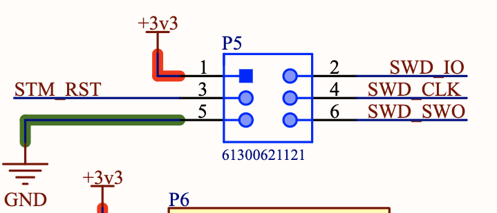

Debugging¶
Ardep v2.0.0 and later¶
Warning
The gdb version provided by the zephyr-sdk does not work correctly with the Black Magic Probe.
Therefore the
west debugcommand will not work.Instead, use the
gdb-multiarchorarm-none-eabi-gdbyou installed in the Getting Started guide.Note
Depending on you system, you might have
gdb-multiarchorarm-none-eabi-gdbinstalled. Both work the same way. Just substitute the command name accordingly.Ardep v2.0.0 and later come with an on-board debugger (OBD) based on the Black Magic Probe (BMP) project.
This allows for easy debugging and flashing without the need for an external debug probe.
For an overview of the host interface, see On-Board Debugger (OBD).
After you connected the debugger to the host via USB-C, start the debugger session with
arm-none-eabi-gdb /path/to/build/zephyr/zephyr.elfand run the following instructions to correctly configure the debugger:target extended-remote /dev/ttyACM0 monitor auto_scan attach 1Replace
/dev/ttyACM0with the correct device node for your system.A gdbinit script file is included in the root of the repository as
debug.gdbinit. You can use it to automate the startup process witharm-none-eabi-gdb -x debug.gdbinit /path/to/build/zephyr/zephyr.elf.See the BMP Guide for more information.
Firmware Updates¶
The Black Magic Probe firmware can be updated using the dedicated bmputil-cli utility or an external programmer.
bmputil-cli¶
Install the utility following the official upgrade guide.
With the debugger connected, inspect the current firmware revision:
bmputil-cli probe info
Upgrade to the latest release:
bmputil-cli probe update
Select
Black Magic Debug for BMP (ST and ST-clones targets)when prompted for the firmware variant andFlash to probefor the action.Repeat
bmputil-cli probe infoto confirm that the new firmware version is active.To flash a specific release or custom build, pass the firmware binary path to
bmputil-cli probe update.
Manual Update via External Debug Probe¶
Note
This method also supports flashing the bootloader.
A Tag-Connect footprint labeled DEBUGGER is located on the back of the board for in-circuit programming with an external debugger.
Use any SWD-compatible debugger to program the binaries at the following offsets:
Firmware image at
0x08002000Bootloader image at
0x08000000
Obtaining Firmware Images¶
Pre-built Binaries¶
Download the latest release from the Black Magic Probe GitHub repository.
This board requires the release named blackmagic-native-st-clones.
Build from Source¶
Follow the upstream getting started guide to build the probe firmware with the following changes:
Configure the build with the
stlink.inicross-fileAdd
-Dbmd_bootloader=trueto the build setup step to enable building of the bootloadergit clone https://github.com/blackmagic-debug/blackmagic.git cd blackmagic meson setup build --cross-file=cross-file/stlink.ini -Dbmd_bootloader=true meson compile -C build meson compile -C build boot-bin
Ardep v1.0.0¶
The following section describes how to use an on chip debugger with ardep.
Connect a debug probe¶
Connect a debug probe to the SWD pins of the ARDEP board.
{kind=link}
Pin one should only be connected to a voltage measuring pin (if required) not to power the board.
For example for an ST-Link V2 you can connect the following pins:
SWDIO to pin 2
SWCLK to pin 4
GND to pin 5
RST to pin 3
Flash using openocd¶
To flash the board using openocd you can use the following command:
west flash --runner openocd
Debug using openocd¶
To debug the board using openocd you can use the following command:
west debug --runner openocd
Flash and debug using JLINK¶
Use the sample commands as above, but replace openocd with jlink.